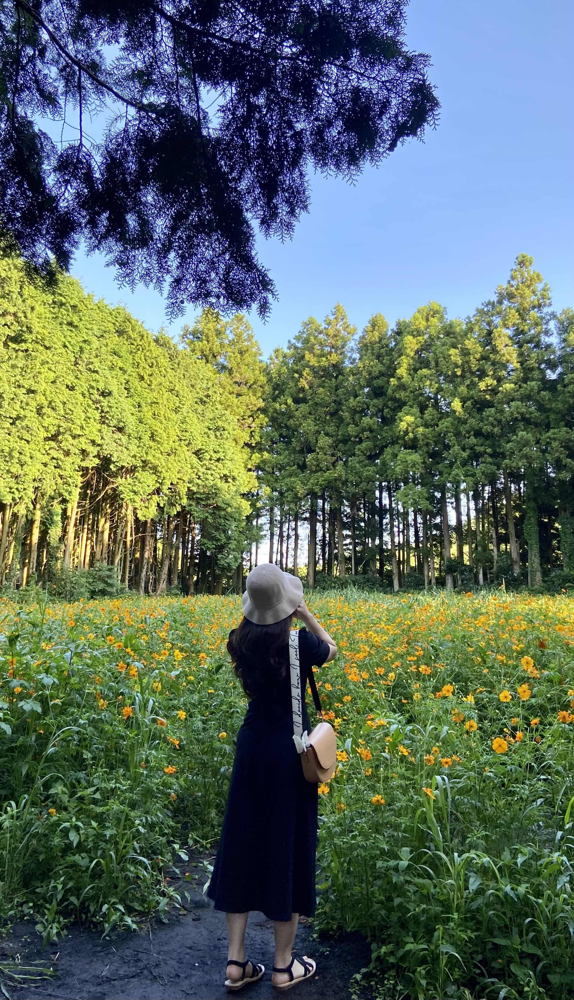
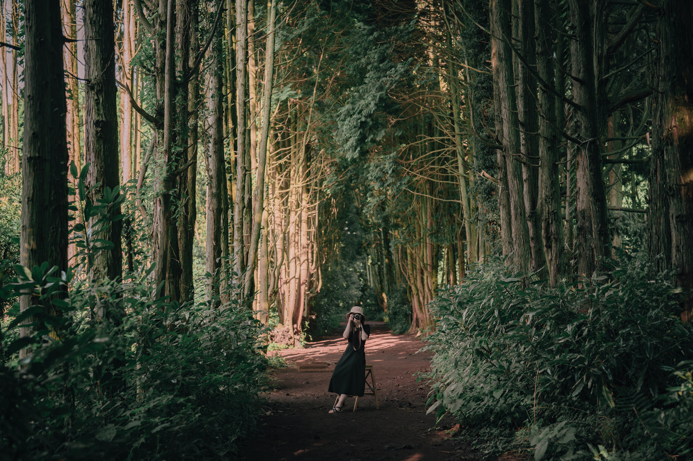
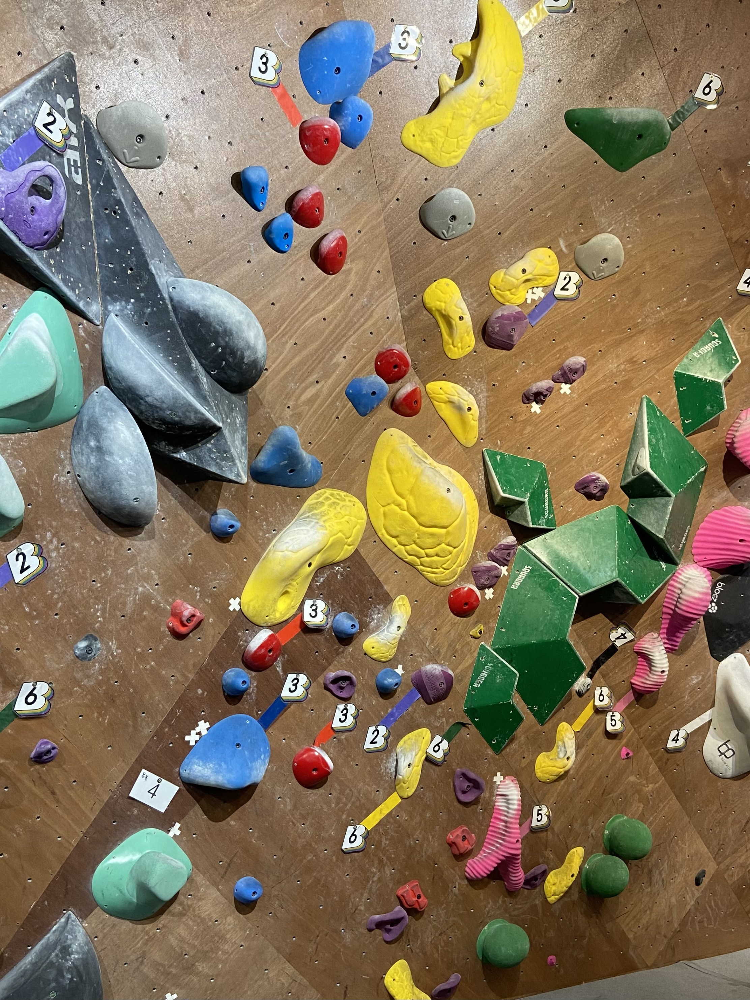

[멋쟁이 사자처럼 11기 김아영]


김아영 / 2001.07.13
안녕하세요. 김아영입니다!
멋쟁이 사자처럼의 아기사자로
함께하게 되어 영광입니다.
[Basic Introduction]
소속: 융합소프트웨어학부 20
MBTI: ISFJ/ESTJ
이름: 김아영
나이: 23
[Hobby]
나의 취미생활 3가지



- Climbing
- Baking
- Walking
[Like]
-
수원 행궁동으로 벚꽃 구경가기
-
맛집 탐방하기
- 바다보기
- 노래듣기 *좋아하는 가수: 10cm, 미노이
앞으로 잘 부탁드립니다~!! 멋쟁이 사자처럼 화이팅!!